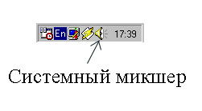
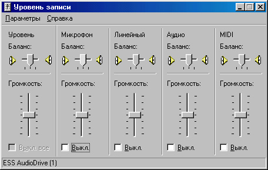
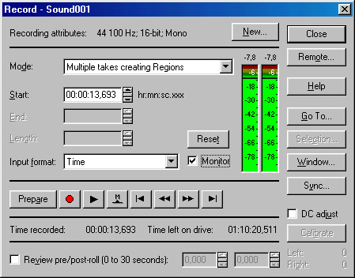
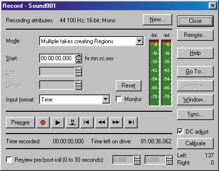
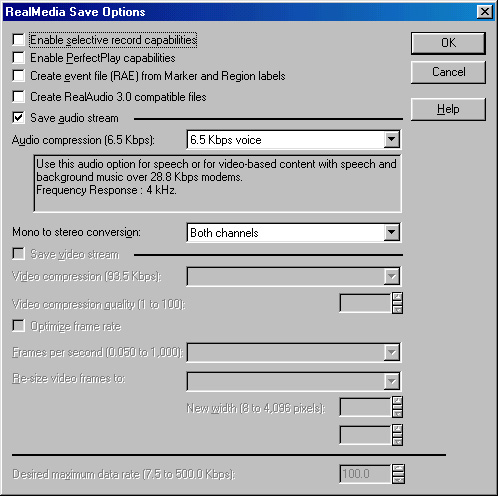
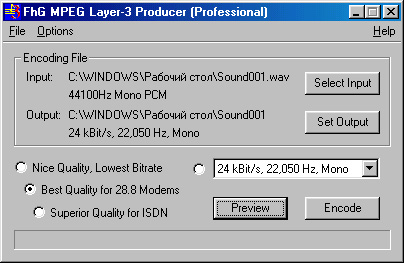
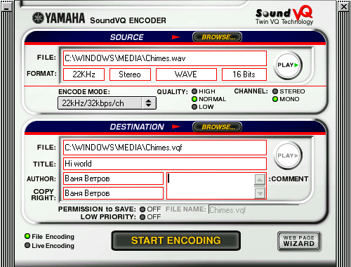

|
|
|
|
5.2. Программы для сжатия звуковых фрагментов
Чтобы поместить сжатый звуковой файл на веб-страницу, его надо сначала создать. О том, как это делается, мы немного и поговорим в этом разделе.
Чтение дорожек компакт-диска
Во-первых, звук надо записать. Если источником музыки является ком пакт-диск, то лучше всего не записывать его обычным образом, а считывать музыкальную информацию программно (поскольку при этом не теряется качество звука). Для чтения звуковых компакт-дисков существует множество программ. Одна из самых удобных — программа AudioCatalyst, созданная компанией Xing.
Основное окно программы XingAudioCatalyst . При вставке звукового компакт-диска в дисковод CD-ROM в этом окне появляется список доро- жек, правда с названиями, принятыми по умолчанию: Track 1, Track 2 и т. д. Если список не появляется, нажмите кнопку Refresh (Обновить).
Чтобы увидеть названия дорожек, надо предварительно соединиться с Интернетом, а потом нажать кнопку CDDB. Через некоторое время загру- зится название альбома и имя исполнителя, а названия дорожек станут содержательными. Это возможно в том случае, если информация о данном компакт-диске имеется в базе данных CDDB. Как правило, она там есть. Теперь осталось отметить те дорожки, которые надо переписать. После этого можно нажать на кнопку Grab! (Перехват), и выбранные дорожки будут скопированы на жесткий диск.
Перед тем как нажимать эту кнопку, хорошо бы определить папку, в которую дорожки будут скопированы. Для этого нажмите кнопку Settings (Наст ройки) — откроется одноименное диалоговое окно. Здесь в самой верхней строке указывается та папка, куда будет копироваться звукозапись. Папку можно изменить с помощью кнопки Browse (Обзор).
Кроме того, в этом окне можно выполнить еще некоторые настройки. В раз деле CD-ROM access method (Метод доступа к СD-ROM) можно настроить пара метры чтения звуковых дорожек. Здесь имеются две вкладки. Для дисководов с интерфейсом SCSI выбирают вкладку ASPI, а с интерфейсом
IDE — вкладку MSCDEX. Затем при необходимости можно поменять способ чтения в раскрывающемся списке Rip Method и скорость чтения в раскрывающемся списке DAE Speed.
А в нижней части этого окна имеется еще пять вкладок, некоторые из которых могут оказаться полезными. Например, на вкладке Silence (Тишина) можно включить автоматическое удаление тишины в начале и/или конце каждой дорожки; для нас это как раз актуально — зачем же передавать через Интернет тишину? А на вкладке Misc. (Прочее) можно включить режим остановки после каждой ошибки, сбросив флажок Continue even if ynchronization fails (Продолжать при нарушении синхронизации). Вообще-то чслать это не рекомендуется, так как возникающие ошибки синхрониза-ции при чтении чаще всего ни на что не влияют, если их не слишком много подряд. Можно также заставить программу начать воспроизведение про-читанного сразу по окончании копирования или даже выключить ком-пьютер после этого.
Кроме того, в основном окне программы есть еще две полезные кнопки — NORM. (Нормализация) и МРЗ (Сжатие в МРЗ). Первая позволяет выбрать режим оптимизации амплитуды звукового файла в реальном времени (“ на лету ”). А кнопка МРЗ позволяет даже включить режим сжатия в формат МРЗ в реальном времени. Однако учтите, что, хотя каждая операция в отдель ности (нормализация и сжатие) занимает не слишком много времени, при выборе обеих сразу компьютер может не успеть все сделать — появятся сообщения об ошибках. Но не беспокойтесь — эти операции можно выпол нять порознь, для чего в диалоговых окнах Normalizing (Нормализация) и МРЗ (Сжатие в МРЗ) есть команды Normalize a wave file right now (Нормализовать звуко запись) и Create an МРЗ now (Сжать звукозапись в формат МРЗ).
Как видите, программу AudioCatalyst можно использовать не только для копирования звукозаписей с компакт-диска на жесткий диск, но и для сжатия их в формат МРЗ. Однако имейте в виду, что встроенный в нее модуль сжатия XingEncoder кодирует звук в формат МРЗ хоть и.быстро, но не всегда качественно. Так что в большинстве случаев лучше использовать другие программы сжатия.
И еще один момент. В окне МРЗ есть параметр Variable, позволяющий созда вать МРЗ-файлы с переменной степенью сжатия. В некоторых случаях это позволяет уменьшить объем выходного файла, хотя далеко не все про- граммы воспроизведения поддерживают такой способ кодирования. Так что если файл сжимается для использования на веб-странице, лучше этот параметр не использовать.
Запись звука от внешнего источника
Итак, если исходный звуковой материал расположен на компакт-диске, то с записью все просто. А что делать, если он расположен на аудиокассете, мини-диске, ЛАГ-кассете или ином внешнем носителе? В этом случае придется осуществить обычную аудиозапись через звуковую карту компьютера. Соедините линейный выход вашего внешнего устройства с линейным входом звуковой карты. Затем дважды щелкните на значке с изображением динамика на панели индикации Windows (рис. 5.1). Откроется окно системного микшера. В нем из меню Параметры выберите пункт Свойства и в открывшемся диалоговом окне выберите пункт Запись. Нажмите кнопку ОК. Появится окно, изображенное на рис. 5.2.

Рис. 5.1. Панель индикации Windows
В этом окне следует выбрать линейный вход (Line). He закрывайте пока это окно — оно нам потребуется для регулировки уровня записи.
Запись звукового материала можно осуществлять даже простой программой, например программой Звукозапись (Пуск > Программы > Стандартные >

Рис. 5.2. Окно системного микшера Windows
Развлечения > Звукозапись), входящей в стандартную поставку Windows. Однако лучше это делать специализированными средствами, например программой Sound Forge. Если открыть эту программу и нажать кнопку Record (Запись) или комбинацию клавиш CTRL+R, откроется окно записи нового файла (рис. 5.3). Если здесь установить флажок Monitor (Индика ция), то уровень входного сигнала будет виден на индикаторе. Включите самое громкое место в своей записи и, изменяя уровень входного сигнала с помощью ползункового регулятора в окне системного микшера (рис. 5.4), добейтесь того, чтобы на самых громких звуках уровень был приблизи тельно равен -1 дБ, то есть был близким к максимальному, но ни в коем

Рис. 5.3. Окно записи в программе Sound Forge
случае не превышал его. Превышение уровня записи индицируется в окне программы Sound Forge красной надписью Clip, как показано на рис. 5.4. Такого допускать нельзя, так как в этом случае в записи появятся неустранимые искажения.

Рис. 5.4. Индикация перегрузки
Когда уровень записи установлен, можно начинать запись. Для этого нажмите кнопку Record (Запись). Во время записи постоянно мигает красная надпись Recording. Когда нужный фрагмент записан, нажмите кнопку Stop (Остановить), а затем кнопку Close (Закрыть). Сохраните записанный файл на диске комбинацией клавиш CTRL+S.
Теперь несколько замечаний. Обычно запись с внешнего источника осуществляется с помощью линейного входа, как было описано выше. Однако на многих современных звуковых картах имеется цифровой интерфейс S/PDIF. Если он у вас есть и вы осуществляете запись с DAT-кассеты или минидиска, то посмотрите, возможно, ваш DAT- магнитофон или MD- проигрыватель тоже имеют такой интерфейс. В этом случае целесообразно записывать звук не через линейный вход, а именно через S/PDIF, так как в этом случае процесс записи внесет в звук гораздо меньше искажений.
У проигрывателей минидисков довольно редко можно встретить обычный коаксиальный разъем S/PDIF, однако, как правило, они оснащаются оптическим входом/выходом. У некоторых современных звуковых карт также имеется оптический вход, хотя это пока и редкость. Проверьте, и если есть такая возможность, записывайте звук через оптический интерфейс. Правда, для этого потребуется специальный кабель.
Сжатие звука
Итак, звук записан и теперь его надо сжать. Кстати говоря, если вы его записывали программой Sound Forge, то можно, прямо не выходя из нее, сжать звук в формат RealAudio. Для этого дайте команду File > Save As (Файл > Сохранить как) — откроется диалоговое окно сохранения файла. В раскрывающемся списке Files of Type (Тип Файла) выберите тип RealNetworks G2 или Real Media для совместимости со старыми версиями — в этом случае качество звучания будет чуть хуже. После щелчка на кнопке Save (Сохранить) откроется окно, в котором можно выбрать параметры сжатия в виде описания. Если же использовать кнопку Advanced (Дополнительно), то можно выбрать степень сжатия в явном виде.

Если в вашей системе установлен модуль кодирования МРЗ, то вы сможете сжать файл с помощью МРЗ-алгоритма тоже непосредственно из программы Sound Forge. Для этого выберите в раскрывающемся списке Files of Type (Тип Файла) пункт Wave, а в раскрывающемся списке Format (Формат) - пункт MPEG Layer-3. При этом можно задать степень сжатия с помощью раскрывающегося списка Attributes (Характеристики). Однако учтите, что при этом будет записан файл, сжатый алгоритмом МРЗ, но в формате WAVE.
Запись в формате МРЗ
Если желательно получить на выходе файл в формате МРЗ, лучше вос- пользоваться программой МРЗ Producer, которую предлагает компания Fraunhofer. Основное окно этой программы изображено на рис. 5.5. Как видите, здесь все просто и нет ничего лишнего. Нажав кнопку Select Input (Выбор источника), можно выбрать WAVE-файл, подлежащий сжатию. Имя выходного файла предлагается автоматически, но если оно не годится, его можно задать с помощью кнопки Set Output (Задать выходной файл). С помошью раскрывающегося списка можно выбрать степень сжатия и режим (стерео/моно). Интересная особенность этой программы — возможность предварительного прослушивания фрагмента в сжатом виде. Для этого служит кнопка Prelisten (Предварительное прослушивание). С ее помощью можно сравнить между собой различные режимы сжатия и выбрать подводящий. Кодирование начинают щелчком на кнопке Encode (Кодировать).

Рис. 5.5. Основное окно программы Fraunhofer МРЗ Producer Professional
Если в меню Options (Параметры) установлен флажок Write RIFF/WAV- Format Files, то на выходе будет записан файл в формате WAVE. Чтобы получить МРЗ-файл, убедитесь в том, что этот флажок сброшен. А вот флажок High Quality Encoding установите обязательно — тогда качество выходного МРЗ- файла будет гораздо выше при той же степени сжатия. Без этой настройки процесс сжатия происходит гораздо быстрее, но качество при этом хуже — примерно такое же, как в программе AudioCatalyst.
Cписок один или несколько файлов. Щелкнув правой кнопкой мыши на значке любого файла в списке, можно индивидуально изменить степень его сжатия или предварительно прослушать его фрагмент (Prelisten). Нажатие кнопки Encode (Кодировать) запускает процесс сжатия всех файлов. внесенных в список.
Программа МРЗ Producer — очень качественный инструмент для сжатие звука в формат МРЗ. Она имеет лишь два недостатка, о которых, тем не менее, следует знать заранее. Во-первых, при сжатии в режиме моно к выбранном параметре High Quality Encoding она может работать нестабильно и в некоторых случаях “зависать”. Во-вторых, она не поддерживает сте пень сжатия 320 Кбит/с, в отличие от AudioCatalyst. Хотя эта последняя особенность в нашем контексте вряд ли актуальна.
Запись формата TwinVQ
Для того чтобы сжать файл в формат TwinVQ, также существует несколько программ. Одной из лучших является YAMAHA Sound VQ Encoder (ее можно загрузить с веб-сайта www.vqf.com). Программа имеет, кстати, довольно оригинальный дизайн. Обращаться с ней крайне удобно. Hа верхней панели можно ввести имя исходного звукового файла или выбрать его, нажав кнопку Browse (Обзор). При этом формат выбранного файла отображается автоматически. Затем с помощью раскрывающегося списке Encode Mode (Режим сжатия) можно задать степень сжатия. Только имейте в виду, что в этой программе указано количество бит в секунду на канал. То есть, если выбрать режим 32 kbps/ch для стереозаписи при установлен ном режиме Стерео, то фактически степень сжатия выходного файла составит 64 Кбит/с (по 32 Кбит/с на каждый из двух каналов).
С помощью переключателя Quality (Качество) можно выбрать качество сжатия: высокое, среднее и низкое. Чем выше качество, тем больше времени требуется программе для сжатия. Однако разница во времени не столь велика, чтобы жертвовать качеством, поэтому практически всегда следует выбирать параметр High (Высокое качество). На нижней панели можно выбрать имя выходного файла (программа по умолчанию предлагает то же имя, как и имя исходного файла, только рас-ширение заменяется на .vqf). Тут же можно указать дополнительные атрибуты, записываемые в ид-файл: название композиции, автора и данные об авторских правах. Можно также ввести собственное примечание.
Если установлен режим Permission to Save (Разрешить сохранение), то пользователь, прослушивающий этот файл в потоковом режиме, сможет сохранить его на жестком диске. Здесь же можно указать имя сохраняемого файла. А если включить режим Low Priority (Низкий приоритет), можно перевести процесс сжатия в фоновый режим. Хотя при этом кодирование займет, разумеется, больше времени, зато можно параллельно заниматься другими делами на компьютере.
С помощью SoundVQ Encoder можно также кодировать сразу несколько файлов в пакетном режиме. Для этого необходимо просто выбрать файлы в Проводнике Windows и перетащить их значки на панель программы. Далее будут предложены уже знакомые нам варианты настройки.
Кроме того, программа поддерживает функцию сжатия в режиме реального времени (“на лету”). Нажав кнопку Live Encoding (Сжатие в реальном времени), можно сжимать звуковой поток, поступающий на вход звуковой карты. Правда, для такого “живого” сжатия необходима достаточно мощная система.
Чтобы обеспечить потоковое воспроизведение, можно создать так называемый VQL-файл. Это текстовый файл, подобный упоминавшемуся выше RАМ-файлу, однако он может быть многострочным. В каждой строке при этом нужно указать местоположение одного VQF-фаи.ла (в виде полного URL-адреса, включая имя протокола http://). Таким образом, можно создать ссылку на несколько VQF-файлов, следующих подряд, то есть использовать VQL-файл в качестве своеобразного списка воспроизведения. Кроме того, в FQL-файл можно вставлять в конец строки любые примечания, отделив их знаком #.

Существуют и другие программы для сжатия файлов в формат TwinVQ. Некоторые из них можно загрузить, посетив уже упоминавшийся сайт www.vqf.com. Рекомендуем опробовать их самостоятельно.
|
|
|
|